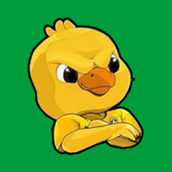

CARTAGO'S SOFTWARE
Todos os campeonatos que importam, o ano inteiro

Tabelaço Cartago's Software—
Time do coração
O app se pinta com as cores dele, e ele fica destacado em todas as tabelas.

Tabelaço Cartago's Software